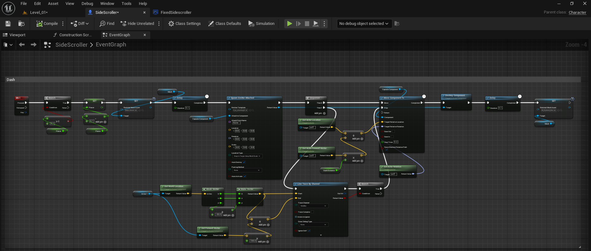
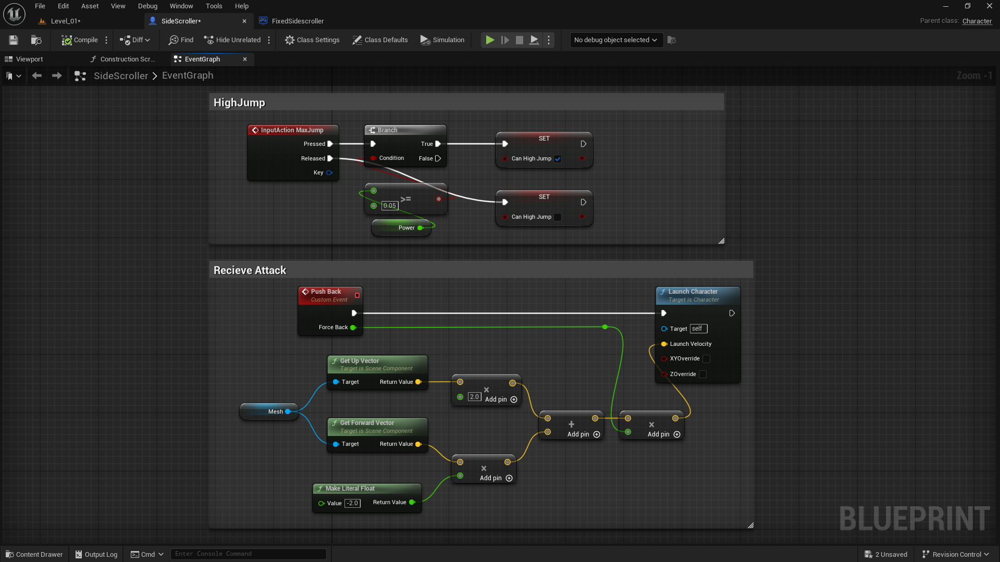

EXPRESSION
GAMEPLAY VIDEO
SYSTEMS & RESPONSIBILITIES
For the dash mechanic, I created this Blueprint in the SideScroller character to allow the player to quickly move forward with a burst of speed. When the dash key is pressed, it checks if the dash is available, then adds forward velocity based on the player’s facing direction. I also used a line trace to detect collisions so the player doesn’t pass through obstacles. A particle effect is spawned during the dash for visual feedback, and a delay node controls both the dash duration and cooldown. Once the delay finishes, the dash becomes available again, making the movement smooth and responsive.
In this setup, I designed two separate functionalities inside my character blueprint. The first section, High Jump, handles the input action that lets the player perform a stronger jump when the condition is met. When the input is pressed, it checks if the player can perform a high jump and sets the “Can High Jump” boolean accordingly, applying additional power for an enhanced jump height. The second section, Receive Attack, focuses on the player’s reaction when hit by an enemy. I created a custom event called Push Back that calculates a directional force using the mesh’s forward and up vectors. These vectors are multiplied and combined to form a launch direction, which is then passed into the Launch Character node to push the player backward realistically, simulating a hit impact. This adds both dynamic response and feedback to the combat system.
